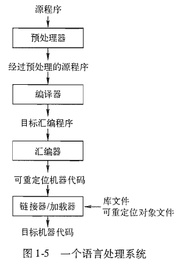

话说程序员的三大浪漫(骗局): 汇编, 操作系统, 编译原理.
这学期开始体验最后一项了, 可惜之前米老师的课程因为少听了几节没跟上节奏, 希望现在自己看龙书能把相应的东西给补上来的
龙书各个章节的概要:
1 给出一些计算机体系结构和程序设计语言原则的背景知识
2 介绍很多重要概念, 并开发一个小型的编译器
3 讨论词法分析, 正则表达式, 有穷状态机和词法分析器的生成器工具.
4 讨论主流语法分析方法, 包括自顶向下方法(递归下降, LL技术) 和自底向上方法(LR技术和它的变体)
5 介绍语法制导定义和语法制导翻译的基本思想
6 使用5中的理论, 说明如何使用并为典型的程序设计语言来生成中间代码
7 讨论运行时环境, 特别是运行时栈的管理和垃圾回收机制
8 讨论目标代码生成技术, 包括基本块的构造, 从表达式和基本块生成代码的方法, 以及寄存器分配技术
9 介绍代码优化技术, 包括流图, 数据流分析框架以及求解这些框架的迭代算法
10 讨论指令级优化, 重点是从小段指令代码中抽取并行性, 并在单处理器上调度这些指令
11 介绍大规模并行性的检测和使用, 重点是数值计算代码, 具有对多维数组进行遍历的紧致循环
12 介绍过程间分析技术, 将讨论指针分析, 别名和数据流分析, 要考虑到到达代码中某个给定点时的过程调用序列
引论
人们通过代码来指示计算机要完成的事情, 但是代码本身只描述了过程的逻辑形式, 它面向人类而非机器. 文本文件中的代码要先被翻译成二进制机器码, 才能在机器上执行. 而负责这项翻译工作的程序系统, 就是编译器.
语言处理器
简单地说, 编译器就是一个负责将某一种语言(源语言)翻译成另一个等价的语言(目标语言)的程序, 其重要任务之一就是报告在翻译过程中发现的错误.
解释器 (interpreter)是另一种常见的语言处理器, 它并不通过翻译生成目标程序. 解释器逐行解释并执行代码, 通常认为它的错误诊断效果比编译器更好, 虽然牺牲了一定的执行速度.
Java语言处理器结合了编译和解释过程, 它将源程序编译成高于机器码的字节码(bytecode)的中间表示形式, 并通过虚拟机(JVM)来执行. 其设计目的是为了更好地产生平台无关代码.
通常一个语言处理系统还包括了
- 预处理器(preprocessor): 负责聚合模块以及处理宏
- 汇编器(assembler): 产生可重定位的机器代码
- 链接器(linker): 将目标文件以及库文件连接到一起解决外部内存地址的问题
- 加载器(loader): 将可执行文件放到内存中执行

编译器的结构
到现在, 我们对编译器的理解就是一个黑盒子, 能够把源程序映射为在语义上等价的目标程序. 更进一步, 我们可以把这个黑盒子分成两部分: 分析部分和综合部分
- 分析(analysis)部分: 将源程序分解为多个组成要素, 并为之加上语法结构, 使用该语法结构来创建源程序的中间表示. 检查语法和语义, 同时收集有关的变量信息, 并存入符号表(symble table)中
- 综合(synthesis)部分: 根据得到的中间表示和符号表来构造目标程序
编译器整体结构
词法分析(lexical analysis)
词法分析器读入源程序的字符流, 并将其组织成有意义的词素(lexeme)的序列, 词法单元包括供语法分析使用的抽象符号和相应符号表中的条目.
语法分析(syntax analysis)
由词法分析器产生的各个词法单元来创建中间表示, 语法树(syntax tree)
语义分析(semantic analysis)
通过语法树和符号表来检查源程序是否符合语言的语义, 同时收集类型定义, 存放在语法树或符号表中. 类型检查(type checking)是语义分析的重要部分, 排查运算分量的是否匹配, 包括某些自动类型转换(coercion)
中间代码生成
在这一步骤编译器将生成明确的低级语言, 它应该易于生成且能够被翻译为目标机器上的语言
代码优化
机器无关的代码优化期望得到更好的目标代码. 更好通常意味着更快(节省时间), 但有时也指指令更短(节省空间)或能耗更低的目标代码
代码生成
代码生成器以源程序的中间表示为输入, 并将其映射到目标语言. 如果目标语言是机器代码, 那就必须为程序的每个变量选择寄存器或内存位置

生产效率
程序是人类生产出的最复杂的工艺品, 包含的细节很多, 并且每一部分都必须是对的.
编译器 是一项庞大的软件工程, 开发编译器时开发人员也会充分利用现代软件开发环境, 包括编辑器, 调试器, 版本管理, 程序描述器, 测试管理等工具.
同时编译器开发人员还创建了专业工具来实现编译器的不同阶段. 这些工具都成功隐藏了生成算法的细节, 并易于集成.